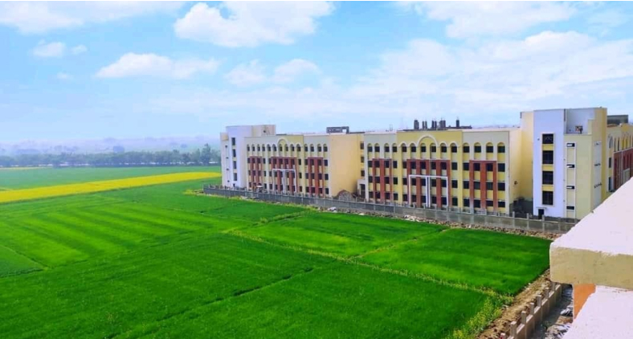
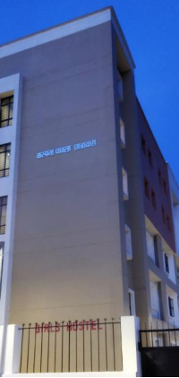
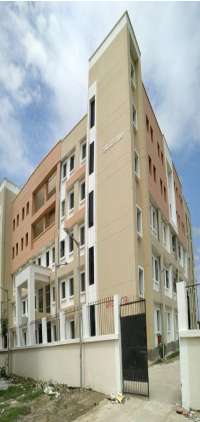

You are welcome to Sershah Engineering College Sasaram believe in providing quality technical education and information about courses to students. Sershah Engineering College, Sasaram has excellent facilities to pursue technical studies and research. It is state government institution under administrative control of Department of Science & Technology, Govt. of Bihar. Sershah Engineering College is one among the six new Government Engineering College established in 2016 by the Government of Bihar under Department of Science &Technology. The institute has shifted to its permanent campus in 2020. The college has approval of All India Council of Technical Education (AICTE) and is affiliated to Arayabhatta Knowledge University (AKU), Patna. The new engineering college will have four engineering branches- Civil Engineering, Mechanical Engineering, Electrical & Electronics Engineering and Computer Science & Engineering with an intake of 60 per branch and 252 Students in total.